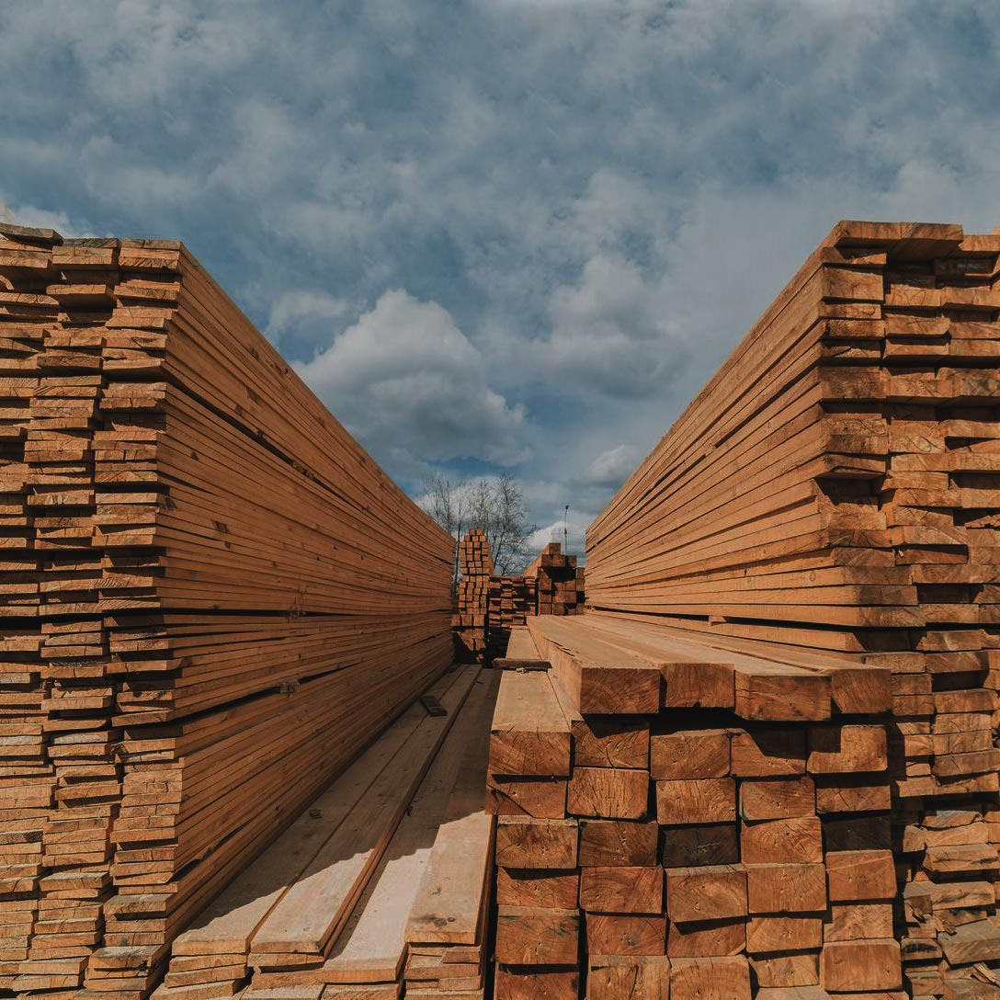

О компании

Компания ООО "Предприятие первичной переработки древесины" занимается изготовлением обрезной доски 1-3 сорта (ГОСТ 8486-86) естественной влажности (22%) из деревьев хвойных пород (ель, сосна). Высококвалифицированный персонал на современном оборудовании производит распиловку по типовым размерам, представленным в таблице ниже. Возможно изготовление обрезной доски по Вашему техническому заданию. Всегда в наличии есть горбыль и опилки. Также наша компания занимаемся поставками готовых деревянных изделий. На складах наших партнеров имеется: доска камерной сушки (влажность до 12%), строганная доска, евровагонка, вагонка штиль, палубная доска, доска пола (шпунтованная доска), имитация бруса и планкен. Работаем с юридическими и физическими лицами. Наши логисты могут организовать доставку пиломатериала в любое, удобное для Вас место.
Таблица размеров
Контактная информация